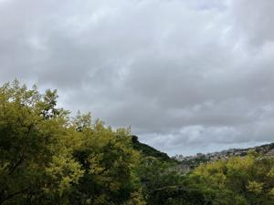
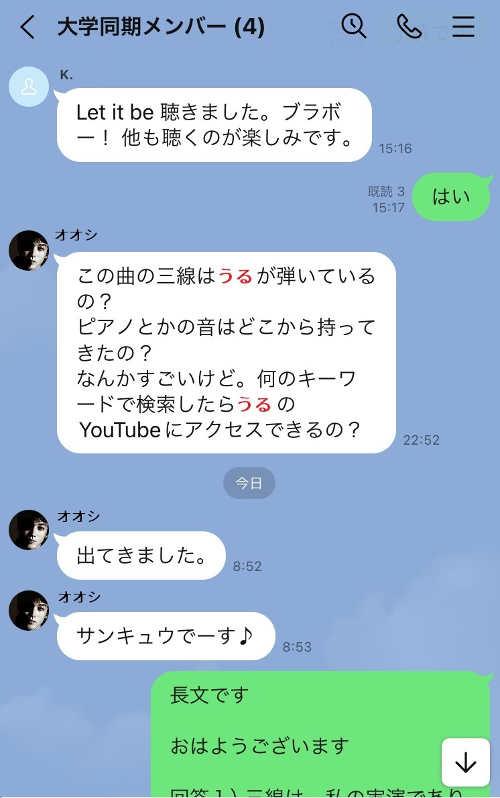

うるがいの話 ある日
最新: ラインのグループ【うるがいの話 ある日】とは 一日だけのプログです
『うるがいの話』の最新一日だけのプログで、通信料が少なく経済的だ。カニの画像をクリックすると全ての日付が載る『うるがいの話』サイトを表示します
|
|
【うるがいの話】 うるがい(ｳﾙｶﾞｲ urugai)とは、『もずくがに』の名前でとても大きくなります。 |
|---|---|
|
|
【カミマヤーの話】 猫のことを方言でマヤーといいます。カミマヤー（kamimayaa）とは、神の猫のことです。 |
|
【たながぁの音楽】 たながぁ（ﾀﾅｶﾞｰ tanagaa）とは手長えびのことで、何種類かあり大きいのは車 エビぐらいになります。 |

|
【ぶながぁの話】 ぶながぁ(ﾌﾞﾅｶﾞｰ bunagaa)とは、赤い髪の毛、赤い身体、そして身長は１ｍ２０ｃｍ ぐらい、川の蟹を食べているの目撃された。場所は沖縄県国頭郡大宜味村のと ある村僕の隣近所に住んでいる爺さんから、聞いた話です。 |
|
|
【ギーマの話】 ギーマ(giima)とは、山原の里山に咲くスズランに似た、 花を付けます。実は食べられます、 気が付くと口の周りが紫になっています。 |
2024年09月30日 (月）ラインのグループ
15:30

とても、工学部卒と思えないやり取りです。飲み会で概略を説明したの
に！！、聞こえないか、理解していなかったのか、説明した私の説明不
足なのか。オオシは、ほんとは、白髪のオジーですが、誰かの写真をパ
クっています。せっかくなので、ただし３０パーセントほど黒塗りしま
した。

長文です
おはようございます
回答１）三線は私の実演でありません（残念ですが）でも、動画のレベ
ルで弾く人がいます。
回答２）
１．古典のチャンネルは、検索画面に tanagaa27
をいれると・・（割愛）チャンネルのエビのアイコンをクイックすると
アップドード動画で、きれいな一覧がでてきます。こちらの方をススメ
ます
２．なんでもありのチャンネルは、検索画面に
bunagaa urugai musescore3
の３つを正しく入れる・・・・・・・（割愛）
回答３）ピアノやギター箏などの音色は楽譜ソフト(MuseScore3)で提
供されています。ただし、三線や島太鼓の音色はないので、三線は、自
宅にあった三線からサウンドフォントというものを、マイクとオーディ
オインターフェースを購入して作成しました。島太鼓はネットの音源を
利用しました。
・・これ以上ここに書くと大変なのでウエブのページを作成します。出
来たら、報告します。なお、この長文はパソコンのラインアプリで操作
しています。
では、ごきげんよう
フムフム、工学部卒でもこれなのかと『無料の楽譜ソフトで三線を演奏
してみよう』のウエブページを作成している（師匠の言うとおりダ）。
１５時１５分 ビットコインの総資産 ￥２６、６１７（↓４１１）